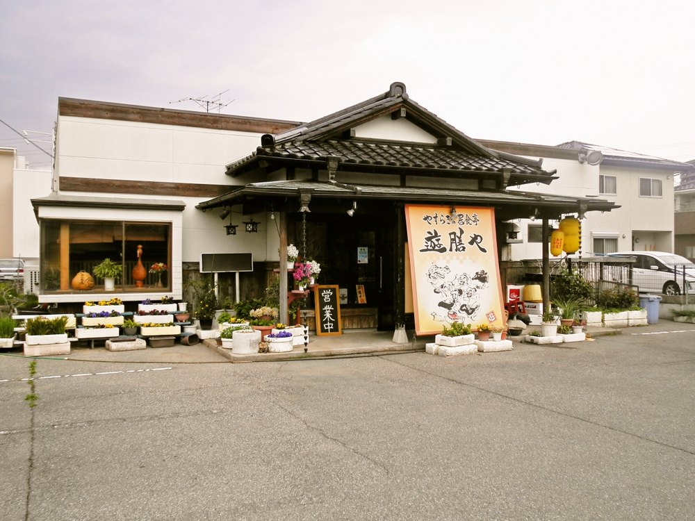

居食亭 遊膳や
生ビールとハイボール、サワー、栃木の鳳凰美田をはじめとする日本酒、九州の焼酎、果実酒。お酒を召し上がらない方にはノンアルコールとソフトドリンクをご用意しております。
お値段は店内のお品書きに掲げております。お電話でもお答えいたします。
焼酎はボトルでもお出ししております。

お昼は 11:30 から 14:00 まで、夜は 17:00 から 23:00 までお開けしております。
木曜日です。月ごとのお休みは公式Instagram（@yuuzenya.2.11）でお知らせしております。お出かけの前にご覧ください。
駐車場がございます。お車でお越しください。
国道50号沿い、小山交差点を過ぎて、自動車買取会社の手前を左に入った左側です。JR小山駅東口からお車で5分ほど、歩くと16分ほどです。
瓦屋根と紅い看板、軒先の提灯が目印です。皆さまのお越しをお待ちしております。
お席・お料理のご相談を承ります。